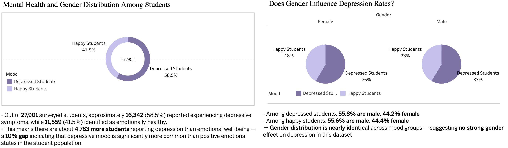

Student Mental Health Analysis
Understanding Depression Patterns in Academic Settings
TL;DR
I analyzed a CSV dataset of 27,901 student responses to explore which academic, lifestyle, and psychological factors correlate most strongly with self-reported depression.
My process:
- Cleaned mislabeled and inconsistent city entries in Excel
- Removed invalid responses and non-geographic data
- Focused on key variables: academic pressure, satisfaction, sleep, suicidal thoughts
- Visualized key insights in Tableau dashboards
Key findings:
- Depressed students are not disengaged — they're overloaded and emotionally burned out
- 50% of depressed students reported suicidal thoughts vs. 13% in the non-depressed group
- Sleep extremes (<5h or >8h) and unhealthy diets are more common in the depressed group
- Gender shows no major effect, while city-level variation suggests location-specific stress
About the Project
This project stood out to me because I've long been interested in how academic and emotional pressure affect students, especially in fast-paced environments.
When I came across this publicly available dataset of nearly 28,000 student mental health responses, I saw an opportunity to explore those stress patterns through data.
I wasn't aiming to build a predictive model — my goal was to find clear, interpretable signals of depression: emotional, behavioral, environmental.
Visual storytelling helped turn raw CSV data into structured insight, allowing me to highlight risk areas that could guide awareness or future intervention.
I followed a six-step analytical workflow:
- Ask
- Prepare
- Clean
- Analyze
- Share
- Conclude
1. Ask
What measurable factors distinguish depressed students from non-depressed ones?
The central goal was to surface which academic conditions, habits, or psychological traits are consistently associated with reported depression — not just correlations, but patterns strong enough to inform action.
2. Prepare & Clean
Dataset Overview
- 27,901 records from anonymized student surveys
- Key fields included:
- Demographics: gender, city
- Academic: CGPA, pressure (1–5), satisfaction (1–5)
- Lifestyle: daily study/work hours, sleep range, diet type
- Psychological: suicidal thoughts, family mental illness
- Target label: Depression_Status (Depressed / Not Depressed)
Data Structuring for Analysis
To compare multiple behavioral and academic factors across student mood groups, I reorganized the dataset into a long format. Each row represents a single response linked to one factor, such as academic pressure, study satisfaction, work hours, or financial stress.
Each factor was either:
- Scored on a 0–5 scale (for pressure, satisfaction, and stress), or
- Recorded as numeric input (for study/work hours)
This structure allowed me to calculate average values for each factor by mental state and visualize the results side-by-side in Tableau. It also made it easier to apply filters and groupings dynamically while keeping the dashboard structure clean and scalable.

Dual Dataset Strategy
While the pivoted dataset was optimal for factor-based comparisons, some analyses required student-level records in a wide format — with each attribute in its own column.
To address this, I maintained two separate versions of the data:
- Wide format: used for gender-based distributions, depression breakdowns, and lifestyle comparisons (e.g., sleep, diet)
- Long format: used for analyzing stress-related academic attributes with grouped bar charts
This dual-format setup gave me flexibility in Tableau — ensuring each insight used the most suitable structure, without compromising clarity or visual integrity.
Cleaning Steps
- City cleanup:
To ensure reliable geographic analysis, I created a reference list of valid Indian cities. Using Excel formulas (TRIM, LOWER, COUNTIF), I normalized all city entries and compared them against the official list. Non-matching values — including personal names, degrees, or invalid strings — were flagged as "Unrecognized" and excluded from geographic visualizations.
- Zero-variance columns:
Two fields (Job Satisfaction, Work Pressure) contained only zero values. These were excluded.
- Category normalization:
Sleep durations like "<5 hours", ">8 hours", and diet labels like "moderate" or "unhealthy" were normalized to use consistent phrasing. This ensured categorical filters worked correctly in Tableau.
- Partial records:
For each visualization, I included only rows with complete values for the variables being compared.
Tools used:
- Excel for cleaning
- Tableau for visualization
3. Insights — What the Data Shows
Depressed students are academically engaged — but overwhelmed
- Academic pressure: 3.7 vs 2.4 (Depressed vs Happy)
- Work/study time: 7.8 vs 6.2 hours/day
- Study satisfaction: lower in the depressed group
Interpretation: Depressed students put in more effort but feel it doesn't pay off. The pattern reflects burnout, not disengagement.
Sleep patterns are a visible red flag
- Students with <5h or >8h of sleep are more likely to be depressed
- Non-depressed students are concentrated in the 6–8h range
Interpretation: Irregular sleep is a strong behavioral indicator of internal imbalance.

Psychological indicators dominate
- Suicidal thoughts: 50% in the depressed group, 13% in the non-depressed group
- Family mental illness: 51% vs 45%
Interpretation: These variables show the strongest contrast and are key risk flags.
No significant gender difference
Gender distribution was identical in both groups: 56% male, 44% female
Interpretation: Gender did not affect reported depression in this dataset.
Geography matters
Depression rates ranged by city: from 52% in Jaipur to 67% in Hyderabad and Ahmedabad
Interpretation: City-level differences likely reflect academic intensity, social environment, or access to support.

Diet shows weak correlation
Unhealthy diet more common in depressed students (26% vs 11%)
Interpretation: The signal exists but is weaker. Diet likely reflects disruption rather than a primary cause.
4. Share (Tableau)
I built a multi-part Tableau story, with dashboards structured around:
- Overview: depression rate and gender breakdown
- Academic Load: pressure, hours, satisfaction
- Mental Risk Factors: suicidal thoughts, family history
- Sleep & Diet: behavioral variables
- City View: mapped depression rates by location
- Gender Comparison: focused gender analysis
Design was centered on clarity and comparability. Every visualization includes contextual labels and consistent formatting.
5. Conclusion
The data shows that student depression is a consistent response to a specific set of pressures. Students who report being depressed are not doing less — they are doing more: studying longer, reporting higher academic pressure, and yet feeling less satisfied. The average difference in study time exceeds 1.5 hours per day, and pressure scores are 54% higher. At the same time, satisfaction drops noticeably, indicating that effort is not translating into positive academic experience.
This imbalance is not just emotional — it becomes behavioral. Sleep patterns are disrupted in both directions, with depressed students much more likely to fall outside the stable 6–8 hour range. Psychological strain is reflected in hard numbers: half of depressed students report suicidal thoughts, nearly four times the rate in the non-depressed group.
No significant differences were found by gender, but city-level variation reached up to 15 percentage points, which suggests that environmental and institutional context play a larger role than individual characteristics.
Overall, the analysis confirms that depression in students is a structural outcome, not a random or isolated condition. The consistency of these patterns across thousands of responses shows exactly where risk accumulates and where attention should be focused. The data does not just describe the problem — it defines its shape.